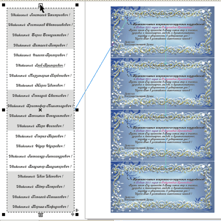
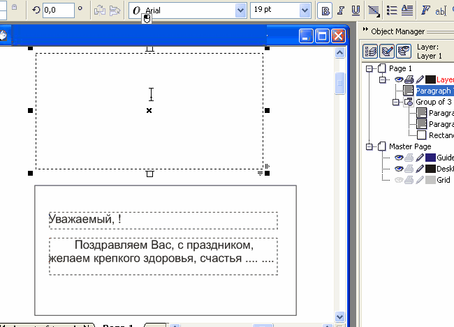

Персональные приглашения, открытки

Этот способ вставки персональных данных в виде текста в макеты персональных приглашений и открыток, этикеток, бейджиков и т. п. основан на том же приёме, который использовался в уроке «Вечный» календарь, то есть на выталкивании текста из одного текстового блока в другие. Исходный текстовый блок, из которого текст выталкивается, содержит список персональных данных. Блоки, по которым эти данные распределяются, располагаются на копиях (дублях) макета-шаблона.
Принцип распределения информации по отдельным текстовым блокам основывается на том, что в каждом отдельном текстовом блоке умещается только определённая часть информации, что предопределено только размером текстовой рамки и атрибутами текста.
Определённая порция информации помещается в соответствующем текстовом блоке лишь потому, что больше в нём уместиться не может. Другая порция информации выталкивается в следующий блок, и вся она распределяется по отдельным блокам.
Количество копий макета-шаблона (количество открыток, бейджиков), располагаемых одновременно на одном листе зависит от размеров самого макета-шаблона и от формата печатного листа, на котором мы создаём раскладку («коллективный» макет).
При большом количестве персоналий может быть и несколько страниц с раскладками.
Макет-шаблон создаётся для получения шаблонного вида макета и сам же располагается на «коллективном» макете (раскладке), и служит прообразом для создания его копий (дублей).
Перед дублированием необходимо очистить текстовый блок макета-шаблона. После дублирования необходимо последовательно связать все тестовые блоки, макета-шаблона и дублей.
Затем связываем исходный блок с блоком шаблона.
Текст в исходном текстовом блоке должен быть отформатирован точно так же, как в макете-шаблоне.
Сжимая исходный текстовый блок, выталкиваем содержимое в «коллективный» макет.
Если количество персоналий очень большое (вполне реальны случаи приглашений или поздравительных открыток с числом доходящим до сотни, а возможно и больше), то можно поступить и так: сдавливая исходный блок не полностью, контролировать визуально наполнение блоков раскладки. Заполнив первый лист, отправлять на печать или сохранить как файл.pdf (если вы будете отправлять это на печать в типографию). Затем сжимать дальше, заполняя данными "следующий лист", снова отправлять на печатать или сохранить второй файл.pdf и т. д.
Специально для cdrpro.ru
Копирование урока или части его и воспроизведение любым способом без письменного согласия автора запрещено
Я, конечно извиняюсь, а использовать слияние при печати, предварительно сохранив нужный список в виде простого текста, не проще (это мое мнение). Лично я так делал приглашения на человек 80 - 120, а еще были грамоты на 200. При этом способе нужен всего лишь один шаблон - все остальное сделает слияние при печати.
woland007, Вы производите впечатление человека серьёзного.
Ответьте на свой вопрос сами, проделав для сравнения пример, используя оба способа.
Solowejka, ну мы же серьезные люди, Date Merge рулит.
splxgf, Вам наверно не попадались серьёзные заказчики, щепитильные до всякой мелочи. В представленом примере требованием заказчика было, чтобы Имя и Отчество были на 2 пункта крупнее основного текста.
Поскольку имя с отчеством каждый раз разной длины, то при выравнивании от центра их приходится вставлять вместе со словом Уважаемый.
Вот и расскажите пожалуйста, как в таком случае на этом Data Merge порулить.
Во-вторых, вполне реальна ситуация, когда надо отдать в стороннюю типографию готовые макеты для печати, а не объяснения, на чём надо рулить.
Заказчиков педантичных и щепетильных хватает. Даже на биллбордах запятые расставляют, там где они не надо.
Но все равно не убедили. Для всех требований которые предъявляют ваши заказчики есть решения в слиянии при печати. И отдать в стороннюю типографию можно (выполнив слияние с документом)
Хотя кому что нравится. И как что делать - решает каждый сам для себя.
woland007, Слово Уважаемый вместе с Именем и Отчеством составляют одно поле. Для одного поля неприменимы разные атрибуты текста.
Если Вы считаете, что применимы, то просветите, буду признателен.
Слияние выполняется в процессе печати. Что Вы в типографию понесёте, выполнив слияние с документом?
Не согласен.
Слияние с новым документом выполняется командой из диалогового окна слияния при печати, и вас получается новый документ с количеством страниц соответствующим количеству полей слияния (грубо говоря столько же раз сколько написано Уважаемый Иван Иванович и т.д.)
Вы же где-то набирали этот текст с разными атрибутами. Так почему после слияния с документом не подправить каждую страничку.
Ну и как я уже говорил - что кому нравится.
не спорьте, макросы рулят ))

shark, спасибо. Я обеими руками за макросы. Но надо со слиянием разобраться.
woland007, уже интересно, но пока ещё не понятно. Не понятно какой именно командой из диалогового окна Слияние при печати выполняется создание многостраничного документа.
Помогите разобраться пожалуйста.
Когда Вы говорите : "...создаётся документ с количеством страниц, соответствующим количеству полей слияния..." , то можно заключить, что Вы путаете понятия "Поле слияния" и "Количество записей"
По поводу полей слияния - это я загнул (записей конечно)
А команда вот
Страницы